A brief history lesson of the reigning life of King Wu of Qin would walk you through the making process of this project. Hear me out.
(From Wikipedia) King Wu of Qin Dynasty was the ruler of what is nowaday known as China from 310 to 307 BC. While visiting the Zhou capital, King Wu, a keen wrestler, decided to try powerlifting a heavy bronze cauldron in the Zhou palace as a show of his own physical strength. Though he successfully lifted the cauldron, the king broke his shin bones while trying to carry it. At night, blood came out of his eyes, and he died very soon afterwards. He had ascended the throne at the age of 18–19, and died aged 21–22, having only ruled for about three years.

I now find this story very believable.
Ideation
I want to build something functional so I go with furniture. I have a shelf full of pots of plants, and I want to divert some attention to this shelf to distributed locations in the house.
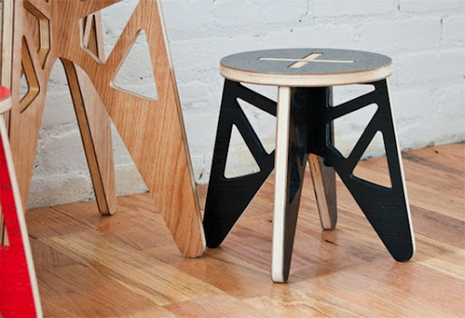
I wish to use three legs to cancel out the parallelogram effect, so I want to throw in a 3D printed joint.
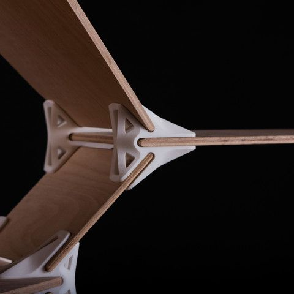
Here is what I have in mind:
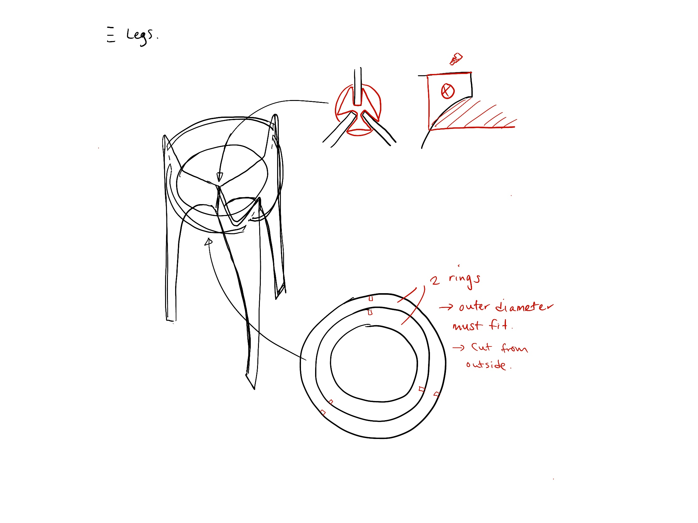
Modeling
I modeled in 3D first before getting the cutting path.
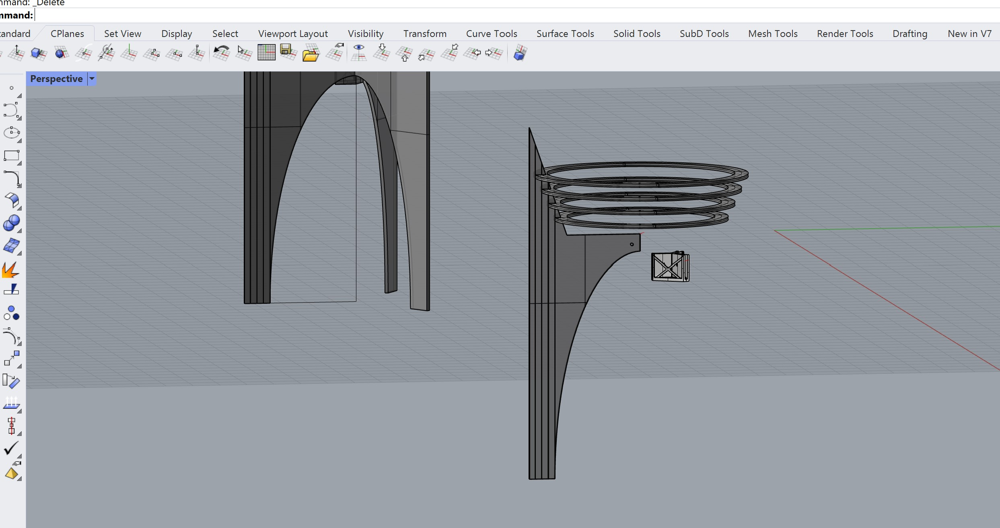
Cute little plant stand, right?
Then it’s about laying the cut pattern out on a 5 feet by 5 feet board. I realize stacking the rings concentrically will reduce some material waste.
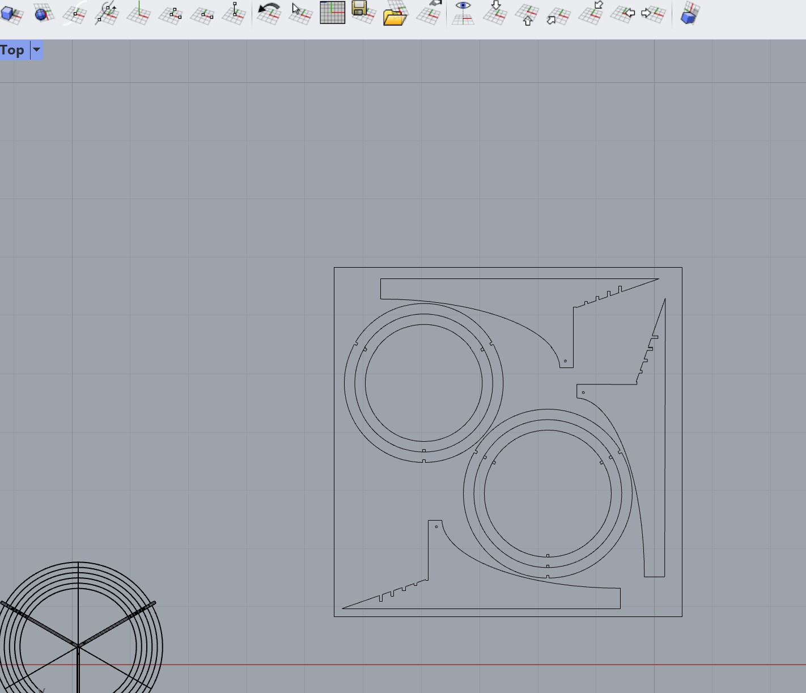
Making it
I made the joint first to get ahead of the making before getting our hands on the Shopbot CNC machine.
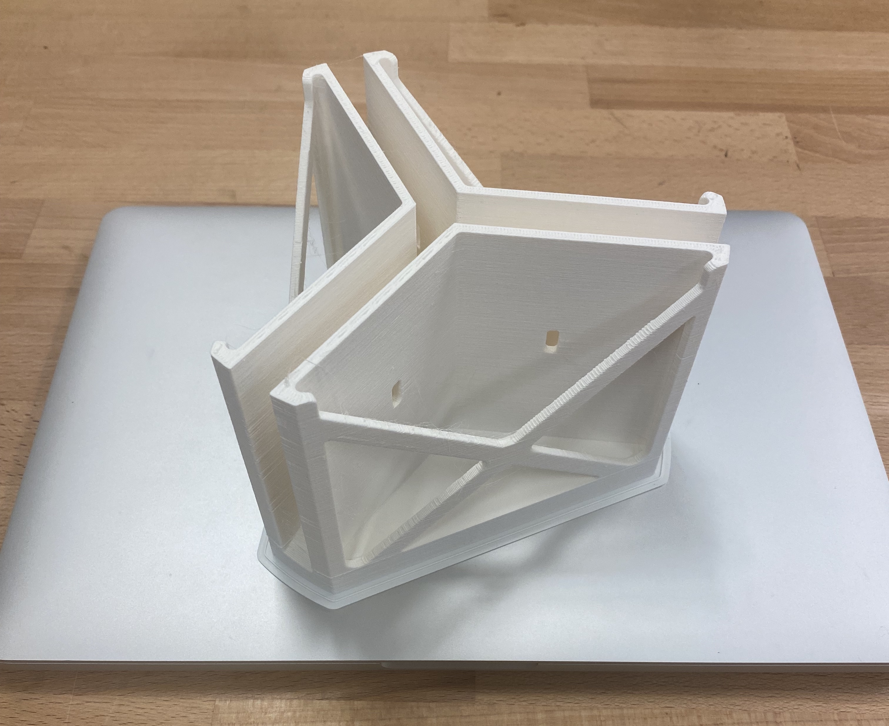
In retrospective, this is the first sign of a huge mistake I am making. Let’s go on for now.
There were some messy recollection about using the Shopbot but we’ve got three heads working together. I’ve got many layers cut from different angle.
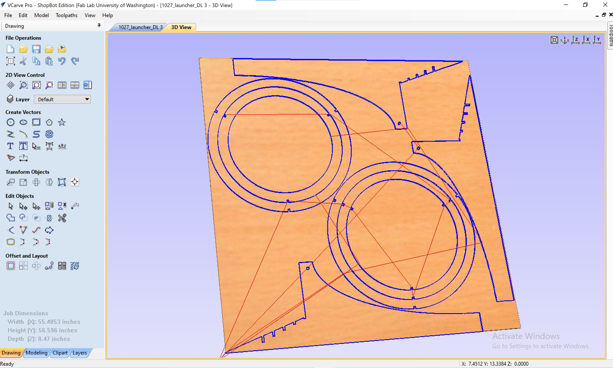
And press START!
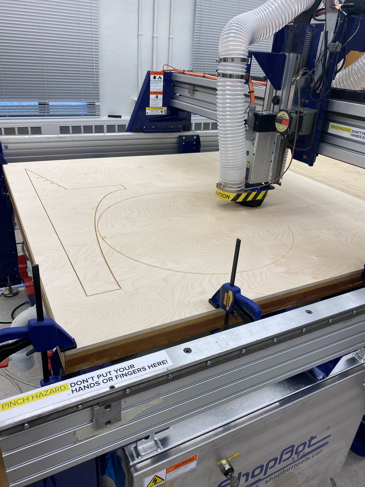
This is oddly satisfying. I watched the whole process.

Although this should have been my second clue of messing up.
The assembly is quite bitter. Because this
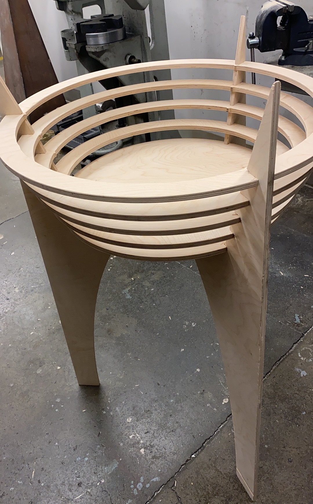
is
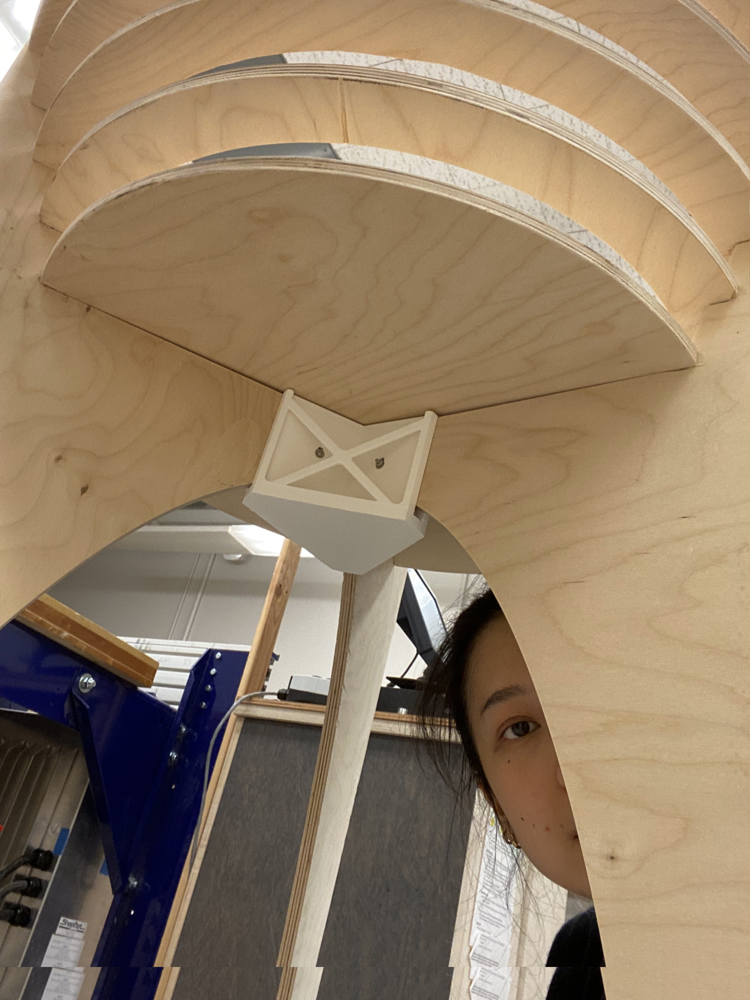
HUGE!
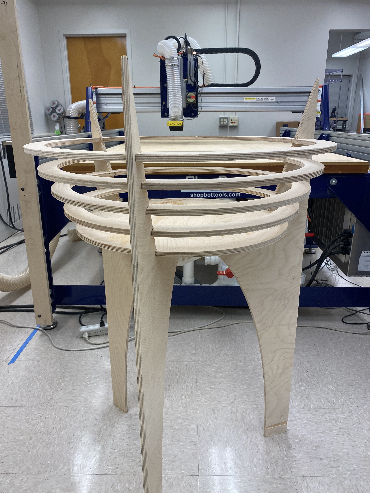
The joint fits nicely.
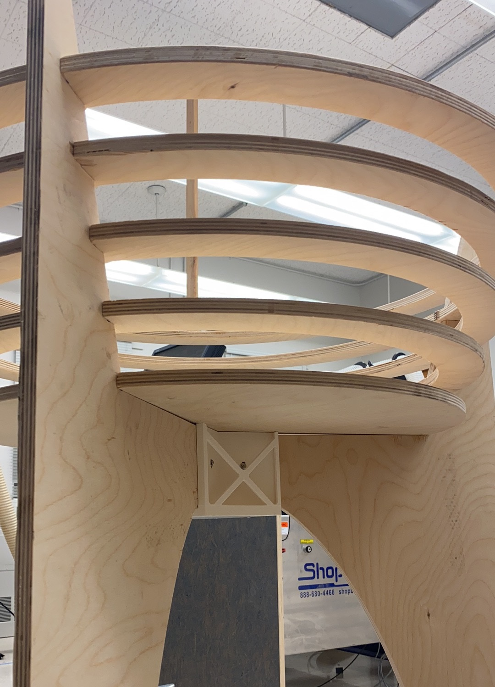
The concentric rings are nicely laid… Sort of.
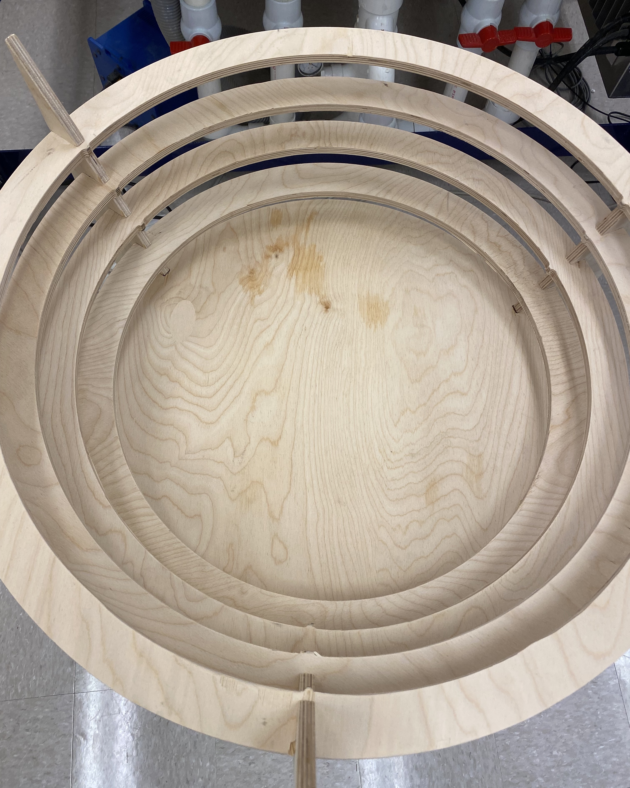
Reflection
I started thinking about the design of my thing before this week’s reading. Instead of having an ideation around the theme of the reading, I discovered some ‘aha’ moments during the making process relevant to the reading as a reflection.
First is the effort paid in designing a functional furniture. It is not easy for the first one, but I can see that there could be a pattern for, say, a parametric design tool to streamline a certain type of woodwork (such as joints).
Second is the doubt about relying on the precision of machine. There are many environmental and human factors affecting the precision of machine - zeroing the gantry, uniformity of the material, path planning… even humidity of the air would affect the press fit tolerance (quote Vee from the ME shop at UW).
Third is the machine precision coupled with material properties. When we CNC-milled the plywood, wood bits stuck out when the upcut end mill passed through. During sanding, some surface cracks propagated and left a surface defect. Mechanically, for a wood log, the strength of a supporting structure would also be different for wood cut along the grains and across the grains. Similar principles apply to garment design, knitting, and many other creative processes. Harvesting the anisotropy of materials in design and making sometimes would yield very special effect.
Lastly, this is a lot of fun! No wonder so many great makers are working with HCI for woodworking.